10 部片单 · 恐怖 / 科幻 / 惊悚 / 悬疑 / 剧情
| # | 片名 | 类型 | 评分 / 状态 |
|---|---|---|---|
| 01 | 破墓 | 悬疑 / 恐怖 / 民俗惊悚 | 93% / 6.9 / 6.7 |
| 02 | 惊变28年 | 恐怖 / 丧尸 / 剧情 | 88% / 77 / 6.6 |
| 03 | 红色房间 | 惊悚 / 悬疑 / 剧情 | 96% / 80 / 7.1 |
| 04 | 怪栗情人 | 惊悚 / 悬疑 / 犯罪 | 95% / 80 / 约 490 万美元 |
| 05 | 野蛮人 | 恐怖 / 悬疑 / 惊悚 | 92% / 78 / 7.0 |
| 06 | 隐形人 | 科幻 / 惊悚 / 恐怖 | 91% / 72 / 7.1 |
| 07 | 无瑕修女 | 恐怖 / 宗教惊悚 / 悬疑 | 71% / 57 / 5.8 |
| 08 | 致命约会 | 惊悚 / 剧情 / 犯罪 | 91% / 74 / 6.6 |
| 09 | 神圣之路 | 惊悚 / 悬疑 / 剧情 | 88% / 48% / 69 |
| 10 | 回应我 | 恐怖 / 超自然 / 剧情 | 94% / 76 / B+ |
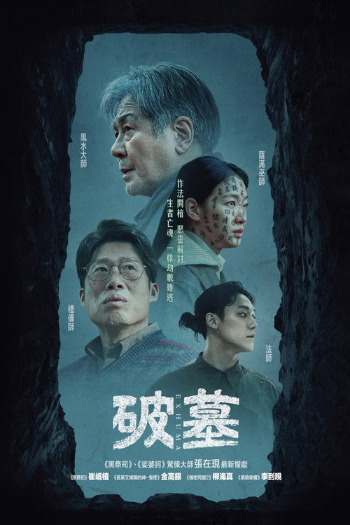
破墓 Exhuma
他们收了钱去迁一座坟。挖开之后，才知道那不是一个坟。
剧情梗概
洛杉矶的韩裔富商家中，新生儿整夜啼哭，家族里的人接连出怪病。巫女花林和弟子奉吉被请去查明缘由，判断是祖先的坟出了问题——「墓在叫」。他们找来风水师金相德与入殓师高宁根，四个人接下一桩报酬丰厚的迁葬生意。地点在中朝边境的深山，一座不该成为墓地的地方。相德一到现场就闻到了不对劲，转身要走，却被加价留下。破土之后，事情开始按一种谁也没料到的方向走。
亮点
- 张宰贤自编自导，他前两部作品是《黑祭司们》（2015）与《娑婆诃》（2019）；为写本片他与殡葬师、风水师、巫师一起工作了一年，并亲自参与殡葬作业。
- 崔岷植（《老男孩》《鸣梁海战》）饰风水师金相德；金高银（《孤单又灿烂的神：鬼怪》《破墓》）饰巫女花林；另有李到晛、柳海真。
- 影片入选第 74 届柏林国际电影节论坛单元；在第 60 届百想艺术大奖拿下最佳导演、最佳女主角、最佳男新人、最佳艺术四个奖项。
- 预算约 1100 万美元，全球票房 9390 万，是 2024 年韩国票房冠军，本土观影人次超过 1190 万。
- 剧组尽量少用 CG：实景、实物道具与真实火光为主，演员对着真实布景表演；片中大量巫俗仪式按韩国传统流程实拍。
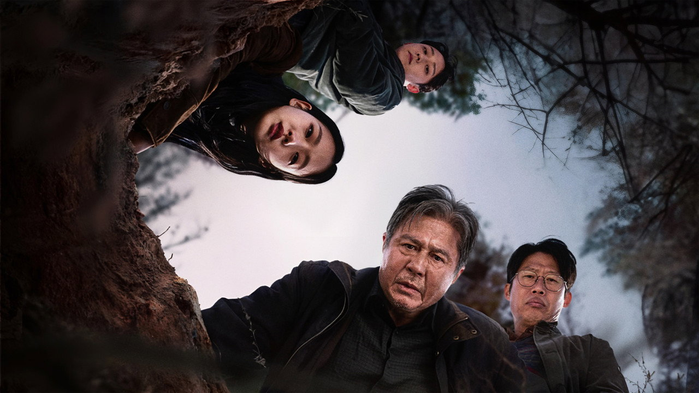
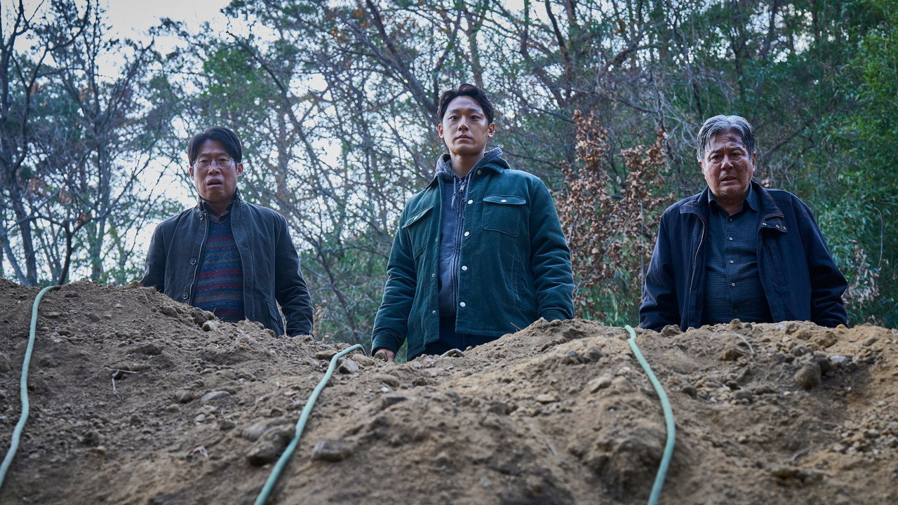
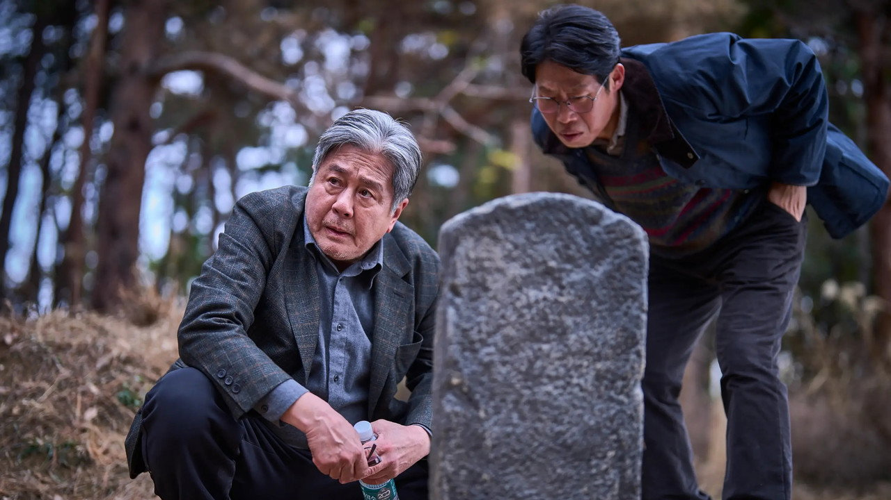
导演与主创 · 他们的历史作品

 娑婆诃
娑婆诃 双面君王
双面君王 黑司祭们
黑司祭们 特别搜查总部
特别搜查总部
 老男孩
老男孩 超体
超体 看见恶魔
看见恶魔 亲切的金子
亲切的金子短评（轻微剧透）
《破墓》最好的地方是它把「类型片」和「民族记忆」接在了一起，而且接得不生硬。前一小时完全是标准商业恐怖片的节奏：接活、看地、破土、出事，每一步你都预期到了；但从第二幕揭开那座坟的来历开始，影片的重心从「闹鬼」滑向「这段历史为什么没有被好好安葬」——它变成了一部关于殖民伤痕的电影，而恐怖只是它的外壳。这个转向是冒险的，因为它会让只想看鬼的人失望，但正是这个转向让它从一堆同类片里冒出来。张宰贤的技术非常稳： nighttime 山景、仪式场面、那具竖着的棺材，都做到了「大银幕值得」。崔岷植把一个贪财但有底线的风水师演得很有人味，金高银的巫女装疯戏是全片最用力也最有效的段落。缺点也说清楚：134 分钟偏长，第二幕有一段解释性对白几乎是在念设定；它的豆瓣 6.7、IMDb 6.9 与烂番茄 93% 差距很大，说明西方影评人看中的「文化厚度」对普通观众未必成立，很多人只觉得后半段「太扯」。这是一部看完会觉得「值回票价但不想看第二遍」的片子。
为什么值得一看
喜欢韩国类型片（《哭声》《娑婆诃》《釜山行》）的人；对风水、巫俗、殡葬题材有兴趣的观众；想看一部票房与口碑都站得住的 2024 年亚洲恐怖片的人。含尸体、开棺与大量民俗仪式画面，忌讳者慎入。内地未引进，海外流媒体可看。
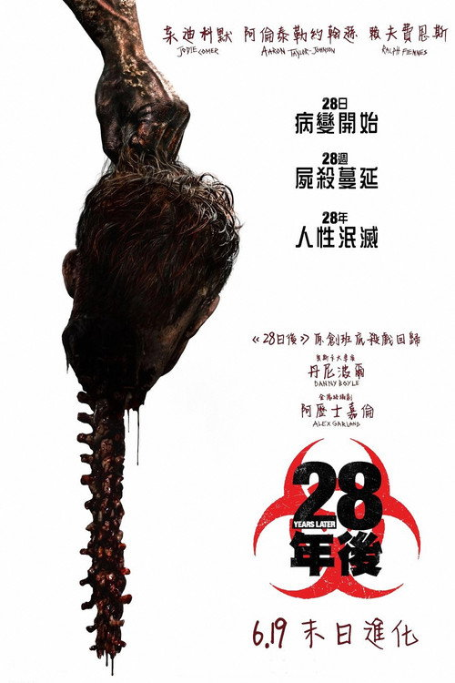
惊变28年 28 Years Later
病毒过去二十八年了。活下来的人建起了岛，也建起了墙。
剧情梗概
狂怒病毒爆发二十八年后，英国本土已成禁区。一群人住在一座靠一条堤道与陆地相连的小岛上，靠定期外出搜集物资维生。少年斯派克跟着父亲杰米第一次踏上大陆——那里有变异的感染者，也有比感染者更难对付的幸存者。而斯派克的母亲伊斯拉病了，病因没人说得清。他决定带她去 mainland 找一位据说什么都懂的医生，于是那趟旅程不再是狩猎，而是一次告别。
亮点
- 丹尼·博伊尔回归执导，亚历克斯·加兰编剧——两人是 2002 年《惊变28天》的原班；摄影安东尼·多德·曼特尔也回来了。
- 全片大部分镜头用 iPhone 15 Pro Max 改装的多机位阵列拍摄，配合无人机与传统摄影机，是近年最大胆的一次主流片摄影实验。
- 朱迪·科默（《杀死伊芙》《最后的决斗》）饰母亲伊斯拉；亚伦·泰勒-约翰逊饰父亲杰米；拉尔夫·费因斯饰医生凯尔森；新人阿尔菲·威廉姆斯饰斯派克。
- 预告片使用了 1915 年泰勒·霍姆斯朗诵吉卜林诗作《Boots》的录音，48 小时内播放破千万，直接推动索尼在数字平台上重新发行了 2002 年的原作。
- 预算 6000 万美元，全球票房 1.51 亿；与续作《白骨圣殿》背靠背拍摄。
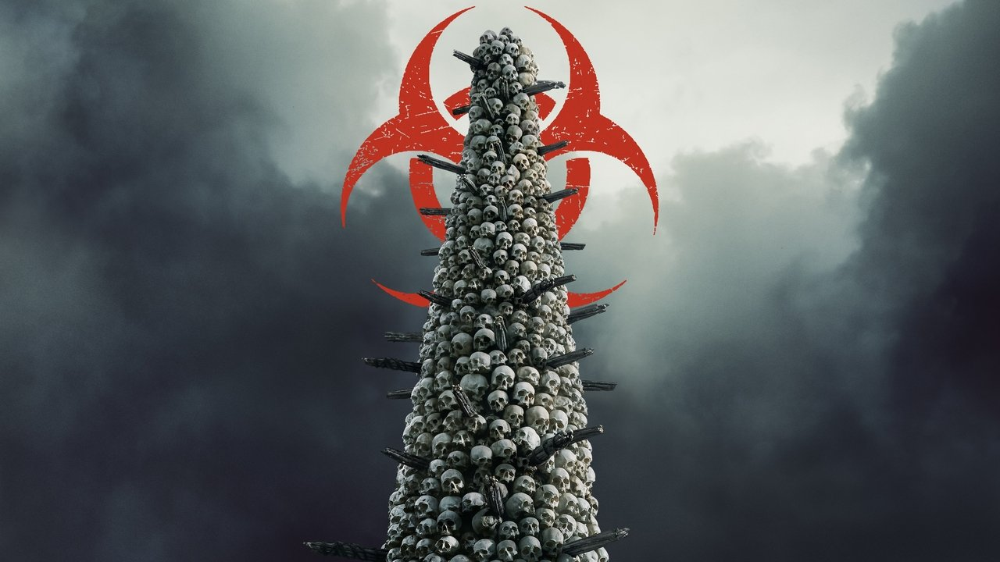
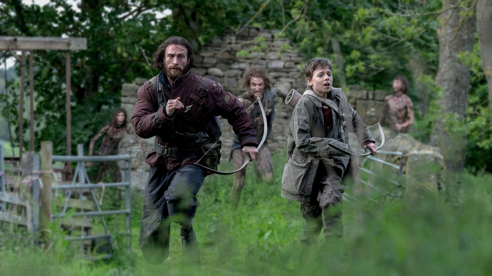
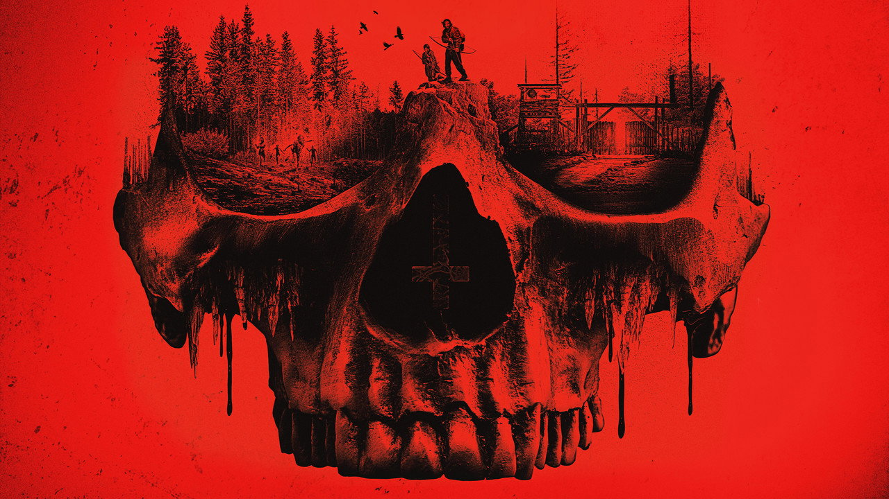
导演与主创 · 他们的历史作品

 贫民窟的百万富翁
贫民窟的百万富翁 猜火车
猜火车 惊变28天
惊变28天 127小时
127小时 失控玩家
失控玩家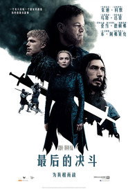
最后的决斗 摩托骑士
摩托骑士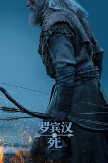
罗宾汉之死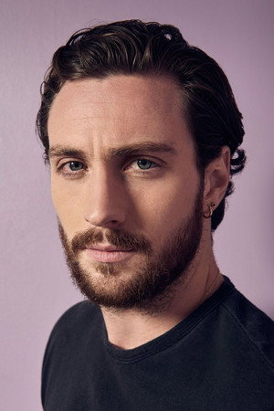
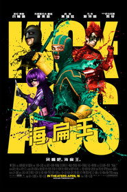
海扁王 哥斯拉
哥斯拉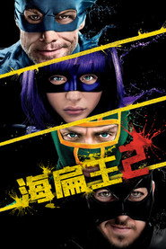
海扁王2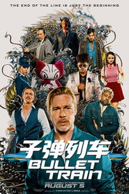
杀手疾风号短评（轻微剧透）
它最反直觉的选择是：这不是一部关于丧尸的电影，而是一部关于母亲的电影。博伊尔和加兰把这个 IP 从「生存惊悚」整个搬到了「成长与告别」上——感染者还在，但它们更像是背景里的大自然，真正的冲突在岛上的规矩、父亲的说教、以及那个孩子慢慢意识到大人们在骗他。这个处理让影片的前半段像《坎特伯雷故事》，后半段突然变成一部极安静的死亡电影，风格落差大到很多观众会觉得被骗了（CinemaScore 只有 B，IMDb 6.6，与烂番茄 88% 的落差非常明显）。我认为它值得这个落差：结尾那场戏的处理在主流恐怖片里几乎见不到，敢这么拍比拍得「顺畅」更难得。技术上 iPhone 阵列拍摄的效果比想象中好，画面颗粒与运动感自成一套语言，不是噱头。缺点也明确：中段有一整段「巨型感染者」的支线游离在主线之外；结尾转向神秘主义式的平静时，前面积累的紧张感会被抽空。它是这个系列里最不像续集、也最有作者性的一部——顺带说，第一期我们推荐过它的续作《白骨圣殿》，本期补上正传。
为什么值得一看
《惊变28天》《惊变28周》的老影迷；想在丧尸片里看情感而不是看追逃的人；对「用手机拍主流大片」这个技术实验好奇的观众。R 级，血腥与裸体段落直白。内地未引进，Netflix 等平台可看。
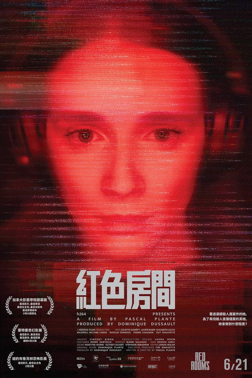
红色房间 Red Rooms
她不是凶手的粉丝。她只是想知道最后一段录像里有什么。
剧情梗概
蒙特利尔。连环杀手路德维克·谢瓦利耶案的庭审进入第三周，法庭里坐着一个每天最早到、最晚走的年轻女人凯莉-安。她不是家属，不是记者，也不是家属请的人。她靠做模特和加密货币维生，把大部分收入花在旁听上。同住一个屋檐下的克莱芒蒂娜坚信谢瓦利耶无罪，两人因此越走越远。而凯莉-安真正想要的，是那个据说被拍下来、却始终没有出现在证据清单上的最后一名受害者的视频——于是她上了暗网。
亮点
- 帕斯卡尔·普朗特自编自导，他的前作是《纳迪娅》与《假假期》；本片在蒙特利尔实拍 23 天完成。
- 朱丽叶·加里皮饰凯莉-安，凭此片获 2023 年加拿大奇幻电影节（Fantasia）最佳表演奖与魁北克电影奖 Prix Iris 年度新秀。
- 劳里·巴班饰克莱芒蒂娜，拿下 Prix Iris 最佳女配角；麦克斯韦尔·麦凯布-洛科斯饰被告谢瓦利耶。
- 入围 2023 年卡罗维发利电影节水晶球主竞赛，并在 Fantasia 拿下最佳影片、最佳剧本、最佳配乐三项。
- 北美票房仅 14.8 万美元，是典型的「影评人口碑极高、商业几乎为零」的作品；2024 年陆续上线流媒体后才被更多人看到。
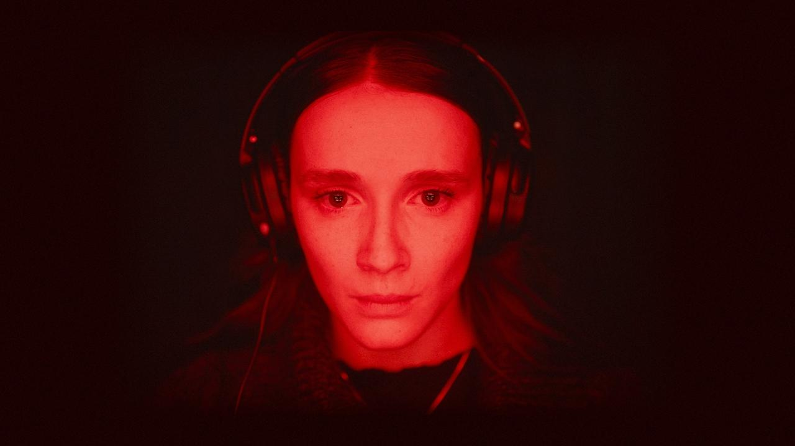
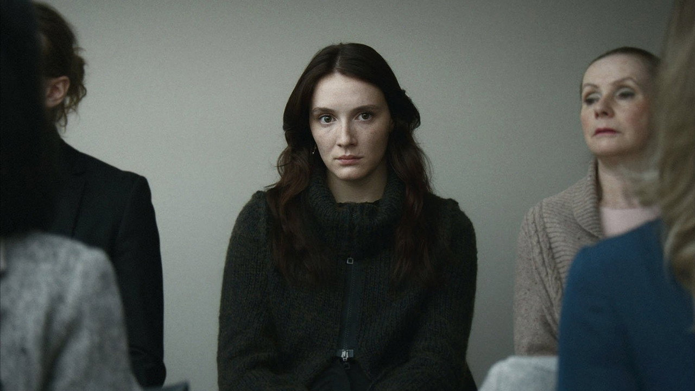
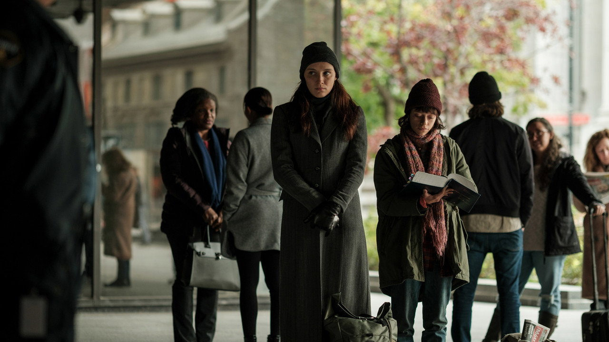
导演与主创 · 他们的历史作品
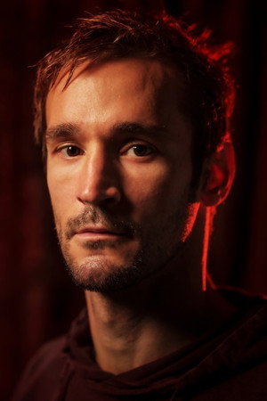
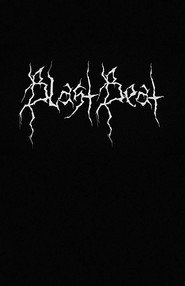
Blast Beat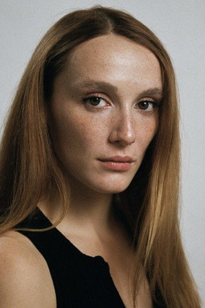
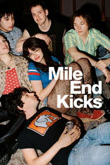
迈尔安德快感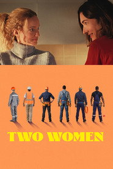
两个女人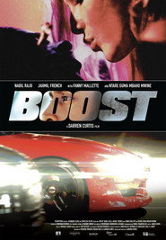
偷车贼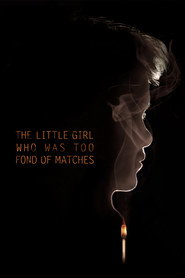
太爱火柴的小女孩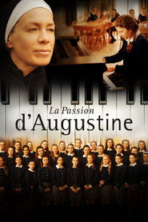
奥古斯丁的激情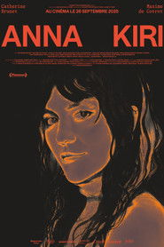
Anna Kiri短评（轻微剧透）
这部片子的聪明之处在于它拒绝给你一个解释。凯莉-安为什么痴迷？影片到最后也没有说，甚至没有暗示童年创伤或者什么社会成因——普朗特只是把她放在那里，让你看着她做一件件说不通的事：凌晨排队进法庭、穿着受害者同款校服出庭、把全部比特币押上一局暗网扑克。这种「不给动机」的做法在 2023 年的语境里很罕见，也更诚实，因为真实世界里狂热粉丝的动机本来就常常是空洞的。加里皮的表演是全片的核心：她的脸在整部电影里几乎没有大表情变化，但你能感觉到那下面有一整套在运转的东西。技术上，影片把「暗网」拍成了枯燥的、需要等待的、充满验证码和 IRC 聊天室的日常，而不是好莱坞式的霓虹黑客空间，这个选择救了它。缺点必须讲：118 分钟对这种极简叙事偏长，中段有几场庭审戏是可以删的；而且它对暴力的处理是「只让你听见、不让你看见」，很多人会觉得不够劲。IMDb 7.1 与烂番茄 96% 的落差说明它是影评人的片子，不是观众的片子——但如果你受得了它的冷，它会是你今年看过最难忘的一部惊悚片。
为什么值得一看
喜欢《十二宫》《记忆碎片》那种「过程片」的观众；对真实犯罪亚文化、暗网、法庭戏有兴趣的人；想看一部不给你答案、让你自己收尾的悬疑片的人。节奏极慢、几乎无血腥画面，追求刺激的会睡着；涉及儿童被害的案情描述，敏感人群慎入。内地无引进，海外流媒体可看。
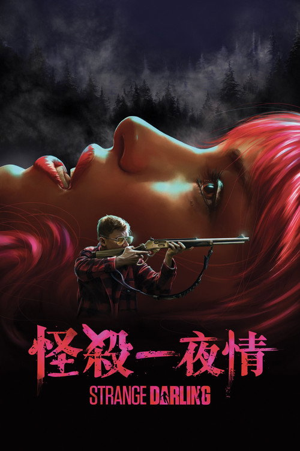
怪栗情人 Strange Darling
全片只有两个主要角色，六个章节，而顺序是打乱的。
剧情梗概
俄勒冈乡间。一男一女在汽车旅馆过了一夜，清晨女人醒来，决定先下手为强。她逃进森林，他追上来，追与逃的关系一路反转——因为影片被切成六个章节，而章节不按时间顺序播放。等到碎片归位，你会明白这不是一段「被害者与加害者」的故事，而是一段关于两个人谁更需要谁的故事。
亮点
- J·T·莫尔纳自编自导，这是他的第二部长片；剧本写于 2021 年，起点是一个视觉念头——「最后的女孩」穿着病号服朝镜头慢跑。
- 摄影由演员吉奥瓦尼·瑞比西首次掌镜，全片 35 毫米胶片实拍，32 天完成；他本人也在片中有声音客串。
- 薇拉·菲茨杰拉德（剧《侠探杰克》《荒野》）饰「女士」；凯尔·加尔纳（《危笑》《新猛鬼街》）饰「恶魔」；芭芭拉·赫尔希、艾德·贝格利二世加盟。
- 2023 年 9 月 22 日在德州 Fantastic Fest 首映，2024 年 8 月 23 日北美公映；Miramax 曾试图把影片剪成线性版本，莫尔纳以退出剪辑权相争，最终拿回最终剪辑权。
- J·J·艾布拉姆斯看完后公开发文：「今年找一部比它更好的电影。它可怕、好笑、心碎、性感、疯狂。」
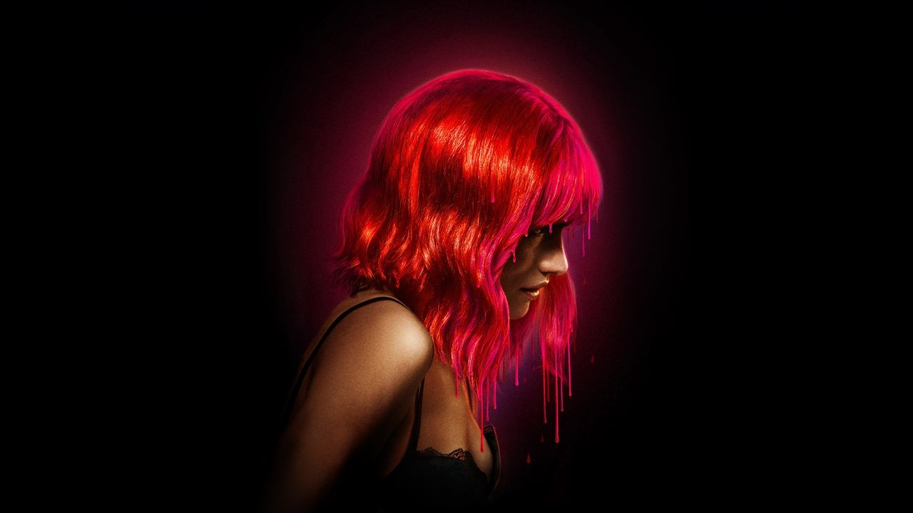
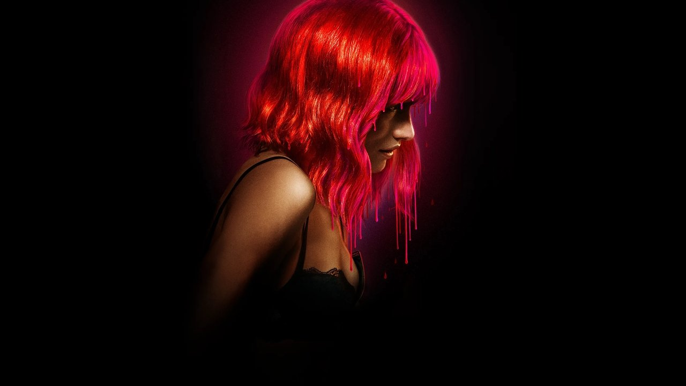
导演与主创 · 他们的历史作品
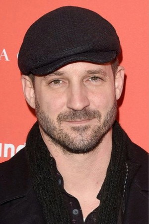
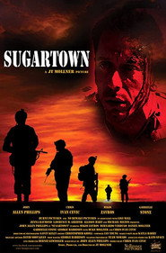
Sugartown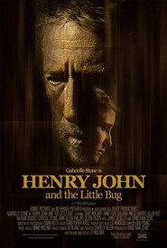
Henry John and the Little Bug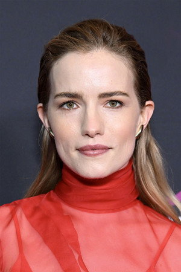
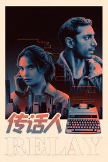
传话人
 美国狙击手
美国狙击手 危笑
危笑 新猛鬼街
新猛鬼街 太平间闹鬼事件
太平间闹鬼事件短评（轻微剧透）
IMDb 上它的类型标签是惊悚，但这其实是一部爱情片——只是爱情片的结构被拆成了六块，再按最能误导你的顺序重新拼起来。这个形式不是炫技：因为顺序被打乱，你在第一章就看到的「受害者」，到第四章才暴露出另一副面孔，而你已经建立的判断全部要推翻重来。莫尔纳真正想说的是「我们有多愿意相信一个女人的受害叙事」——当你默认她是猎物的时候，你就已经落进了她的局。菲茨杰拉德贡献了近年最被低估的一次主演表演，她必须在同一个角色里演出「惊恐」和「算计」两层，而且两层都要可信；瑞比西的 35 毫米摄影让整部片子像一颗上了色的糖果，好看得可疑。缺点也很明确：它的聪明是结构上的聪明，一旦你看完知道答案，第二次看的价值会打折；几位配角（尤其是那对路过的夫妇）像是临时塞进来送死的。CinemaScore 类的观众分并不算高，说明很多人反感这种「被耍了」的感觉。但就「如何用最低成本把一个烂俗前提拍出新意」这件事，它是近年的教科书。
为什么值得一看
喜欢《落水狗》《记忆碎片》《致命魔术》那种非线性结构的观众；想看 35 毫米胶片质感的影迷；想在惊悚片里看到一次真正有分量的女主演技的人。R 级，暴力与性场面直白，且含对暴力受害者的欺骗性描绘。内地未引进，海外流媒体可看。
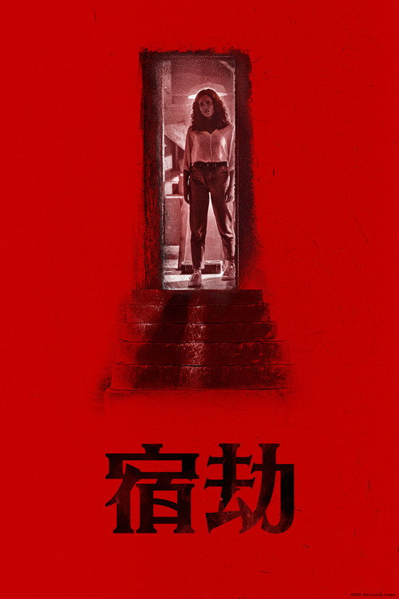
野蛮人 Barbarian
她订的民宿被重复出租了。她还是住了下来。
剧情梗概
泰丝深夜抵达底特律，明天有一场工作面试。雨里她打开预订的房子，发现里面已经住了一个男人基思——平台重复出租了。外面下着雨，附近没有酒店，她决定留一晚。基思看起来人不错，但房子里有说不通的地方：地下室的门、走廊尽头的房间、以及一套没人承认存在过的录像带。第二天基思失踪，房子来了新主人——一个被 industry 除名的演员 AJ，而他的麻烦才刚开始。
亮点
- 扎克·克雷格自编自导，他的长片处女作；此前他是喜剧团体 The Whitest Kids U' Know 的成员，这也是他第一次拍恐怖片。
- 乔治娜·坎贝尔（剧《黑色镜子：圣朱尼佩洛》《氪星》）饰泰丝；比尔·斯卡斯加德（《小丑回魂》的潘尼怀斯）饰基思；贾斯汀·朗饰 AJ。
- 预算 450 万美元，全球票房 4540 万，是 2022 年投资回报率最高的原创恐怖片之一；烂番茄 92%、Metacritic 78。
- 影片在保加利亚索非亚的摄影棚内搭建了整套房屋与地下隧道，以便连续拍摄不同楼层的空间关系。
- 克雷格因本片获得好莱坞评论协会、Fangoria 电锯奖等多个最佳导演/最佳剧本提名；他随后执导了 2025 年的《凶器》。
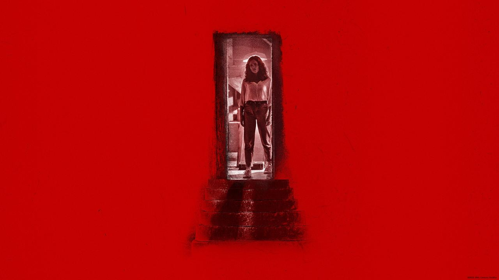
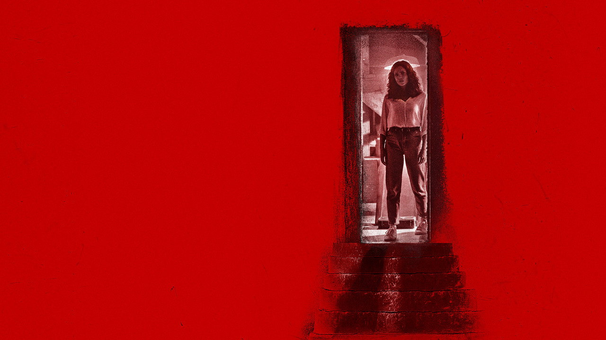
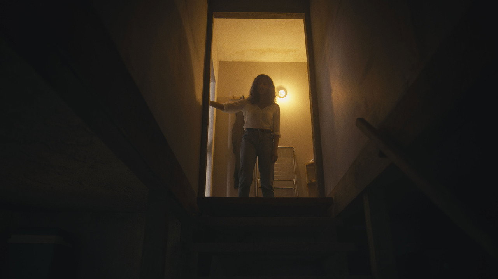
导演与主创 · 他们的历史作品

 三月女郎
三月女郎 基哥们
基哥们 大学预备生
大学预备生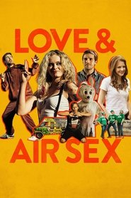
爱和虚拟性爱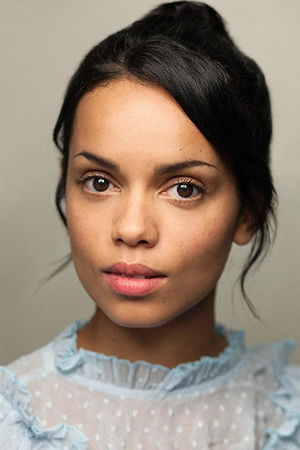
 绿液惊魂
绿液惊魂 蒙上你的眼：逃出巴塞罗那
蒙上你的眼：逃出巴塞罗那 亚瑟王：斗兽争霸
亚瑟王：斗兽争霸
 疾速追杀4
疾速追杀4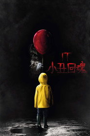
小丑回魂 乌鸦
乌鸦 诺斯费拉图
诺斯费拉图短评（轻微剧透）
它最值得说的一点是：中段那个视角切换，是整个 2020 年代恐怖片里最大胆的一次结构动作。前一幕你还在一个紧张的女人视角里，突然时间倒退、换人、换类型——从心理恐怖滑进黑色喜剧，而你必须重新校准对同一个空间、同一个角色的判断。能做到这一点而不断裂，是因为克雷格把所有伏笔都埋在了第一幕的「生活细节」里：那杯水、那扇门、那句随口的台词，事后全都是线索。贾斯汀·朗那段戏是全片最有趣的段落，他演一个被 #MeToo 指控毁掉事业的男演员，观众的同情与厌恶被反复拉扯，这个角色的复杂性在整个恐怖片里都不多见。缺点也清楚：第三幕从地下爬出来之后，影片转向了纯粹的肉体恐怖，前面建立的那种「日常空间的恐惧」被稀释了；CinemaScore 只有 C+，说明买票进场的大众观众并不买账——他们想要的是鬼屋，拿到的是一篇关于男性暴力的论文。IMDb 7.0 与烂番茄 92% 的落差就是这件事的量化结果。但这是那种「你会在三个月后突然想起某场戏」的片子。
为什么值得一看
喜欢《异形》《闪灵》那种「空间即敌人」的观众；能接受类型在中途翻转的人；想看 2020 年代原创恐怖片里最敢冒险的一部的人。R 级，包含性暴力相关主题与直接的血腥场面，心理承受力一般的谨慎。内地未引进，海外流媒体可看。
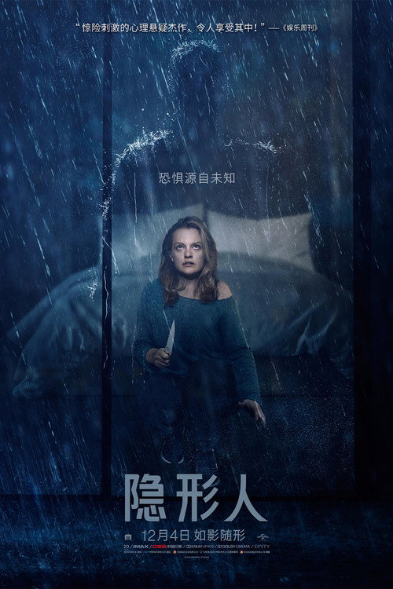
隐形人 The Invisible Man
他死了。可她知道他没死——问题是没有人相信她。
剧情梗概
塞西莉亚在夜里逃出了男友阿德里安的房子。两周后消息传来：阿德里安自杀了，还给她留了一大笔遗产。一切应该结束了。但塞西莉亚开始感觉到房间里还有第二个人——被推下楼梯、被掐住喉咙、面试时被无形的手毁掉。她确信阿德里安伪造了死亡，并用自己光学工程师的本领做出了隐形衣。她要证明这件事，而她身边所有人，包括她的妹妹和朋友，都开始怀疑她疯了。
亮点
- 雷·沃纳尔（《电锯惊魂》编剧、《升级》《潜伏3》导演）自编自导；本片是环球「黑暗宇宙」计划取消后，改由布伦屋以 700 万美元低成本重启的项目。
- 伊丽莎白·莫斯（剧《使女的故事》《广告狂人》、电影《我们》）饰塞西莉亚；奥利弗·杰克逊-科恩饰阿德里安；另有阿尔迪斯·霍奇、斯托姆·里德。
- 关键决策：把视角从「隐形人」换成了「被隐形人跟踪的女人」，使影片成为一部关于亲密关系暴力与「没有人相信你」的恐怖片。
- 大量隐形效果靠实拍完成——钢丝、道具、镜头运动，高潮的餐厅与走廊戏几乎没有依赖 CG。
- 预算 700 万美元，全球票房 1.445 亿美元，是 2020 年性价比最高的类型片之一；内地于 2020 年 12 月公映。
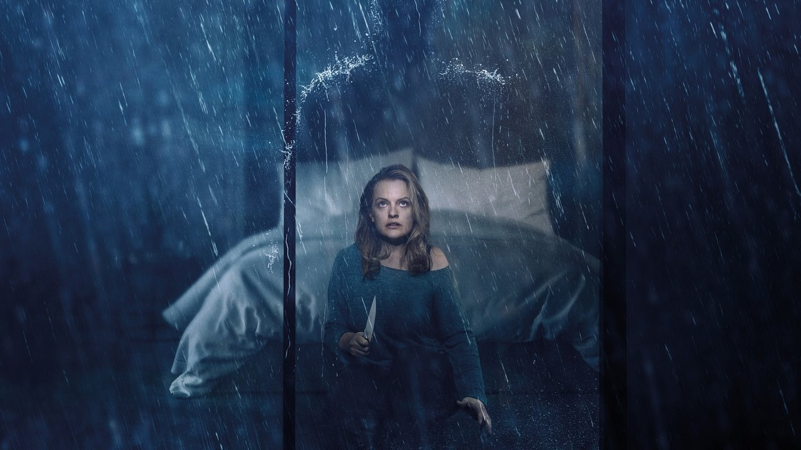
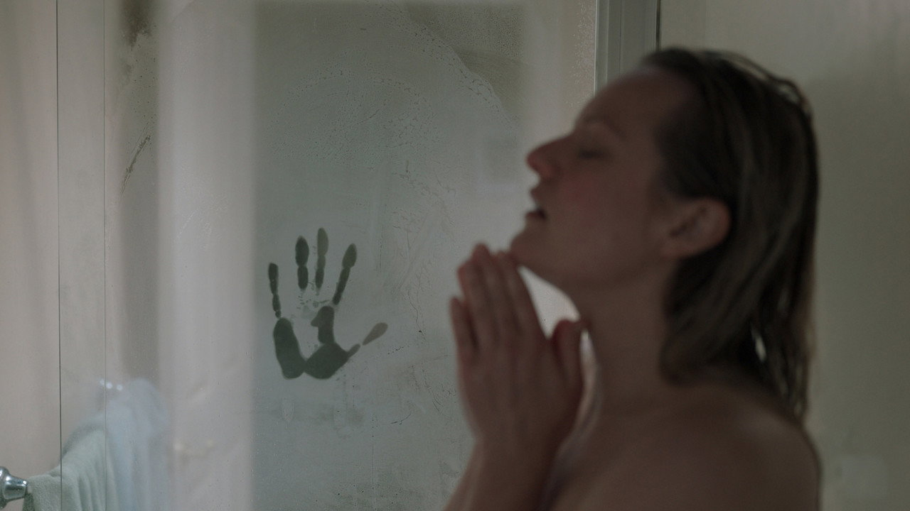
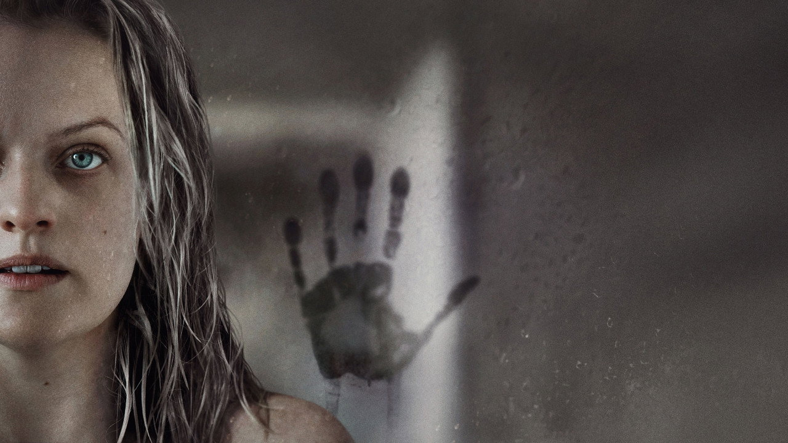
导演与主创 · 他们的历史作品

 电锯惊魂
电锯惊魂 潜伏
潜伏 电锯惊魂2
电锯惊魂2 升级
升级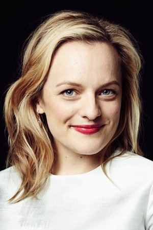
 我们
我们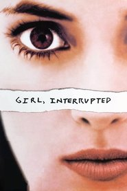
移魂女郎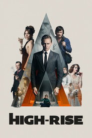
摩天大楼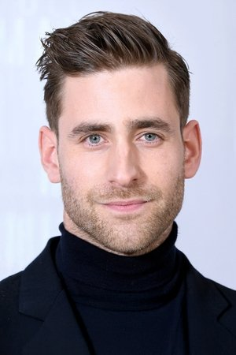
 床伴逐个数
床伴逐个数短评（轻微剧透）
这是把一个经典 IP 救活的最典型案例。环球原本打算让约翰尼·德普演隐形人本人，那个版本随着「黑暗宇宙」一起死了；沃纳尔接手后做了一件极其简单的反转——不拍那个男人，拍那个女人。于是 H.G. 威尔斯的故事第一次有了当代的重量：隐形不再是超能力，而是「施暴者可以随时出现在你身边而法律看不见他」的完美隐喻。莫斯的表演是全片的地基，她必须一个人在空房间里演出「被按住」的窒息感，而且是长时间的、不分场次的那种；那段餐厅里的长镜头，你明知道什么都没有，还是会跟着她一起绷住。技术上沃纳尔非常克制：他大量使用「空镜头的缓慢横移」来暗示空间里有人，比任何特效都有效。缺点也说清楚：第三幕转向复仇动作片，前面辛苦建立的现实主义被削弱了；Metacritic 72 比烂番茄 91% 低不少，说明影评人对它的主题深度有分歧——BBC 给了两星，认为它「缺乏惊吓」。但作为一部 90 分钟以上不冷场的惊悚片，它至今仍然是同类里最好的那一档。
为什么值得一看
喜欢《消失的爱人》《煤气灯下》那种「没人相信我」叙事的观众；伊丽莎白·莫斯的影迷；想在科幻外衣下看一部关于控制与暴力的电影的人。R 级，暴力与性侵相关描写直接，相关经历者慎入。内地曾于 2020 年 12 月公映，现主流平台可看。
无瑕修女 Immaculate
她是个处女。她怀孕了。修道院说这是神迹。
剧情梗概
美国修女塞西莉亚受邀前往意大利乡间的一座修道院，那里专门照料临终的修女。她喜欢这里，也喜欢院长和姐妹们。然后她发现自己怀孕了，而她从未有过性行为。修道院上下把她当作新的圣母，开始为她准备一切。塞西莉亚起初也相信这是恩典，直到她开始咳出牙齿、脚底出现十字形的伤，以及一个姐妹试图在夜里淹死她。她想走，但门是锁的。
亮点
- 迈克尔·莫汉执导，剧本由安德鲁·洛贝尔写于 2014 年——西德妮·斯威尼当时试镜过其中的角色，项目随后陷入开发地狱。
- 《亢奋》走红后，斯威尼自掏腰包买下剧本版权，邀请老搭档莫汉执导，并以自己的 Fifty-Fifty Films 担任制片。
- 阿尔瓦罗·莫特（剧《纸钞屋》的教授）饰萨尔神父；贝内黛塔·波尔卡罗利（《我的天才女友》）饰修女格温；西蒙娜·塔巴斯科（《白莲花度假村》第二季）加盟。
- 主要场景在罗马近郊的 Villa Parisi 与真实地下墓穴拍摄——Villa Parisi 曾用于《蜜月屠刀》《血与黑蕾丝》等多部意大利经典恐怖片。
- 预算 900 万美元、全球票房 3500 万，创下 NEON 当时最佳开画纪录；与同期上映的《凶兆前传》被媒体称为「双胞胎电影」。
导演与主创 · 他们的历史作品
 偷窥者
偷窥者 家弑服务偷窥者
家弑服务偷窥者短评（轻微剧透）
先说结论：这不是一部「好」电影，但它有一个「好到值得看一次」的结尾。前面的 70 分钟几乎是《凶兆前传》的低成本翻版——修道院、怀孕、教会阴谋，每一步你都见过；莫汉的调度也谈不上风格，几处跳吓廉价得让人出戏，Metacritic 57、IMDb 5.8 是诚实的分数。但最后十分钟完全不同：塞西莉亚不再是受害者，她做了一连串极端、血腥、毫不体面的事，而且导演没有给她任何英雄配乐或慢镜头。这一段把整部电影的主题从「宗教恐怖」拧成了「一个女人对自己身体主权的最后争夺」，前面所有的沉闷突然有了意义。斯威尼的表演是它撑得住的原因——她在最后一场戏里的状态与前面判若两人，那不是演技炫技，是角色真的走到了那一步。另外值得说的是：这部片子的制片路径比影片本身更有意思——一个年轻女演员买下十年前试镜失败的剧本，自己当制片人把它拍出来，这种掌控力在好莱坞不多见。如果你只打算看一部修女恐怖片，看《凶兆前传》；如果你想看一部「结尾值回票价」的邪典片，看这个。
为什么值得一看
西德妮·斯威尼的影迷（这是她第一次真正挑大梁的类型片）；喜欢《罗斯玛丽的婴儿》《凶兆前传》那一脉宗教恐怖的人；想看一个「结尾很疯」的邪典片的观众。R 级，含大量身体恐怖与分娩相关场面，敏感人群慎入；整体口碑两极，请勿期待过高。内地未引进，Netflix / Hulu 可看。
致命约会 Woman of the Hour
1978 年，一档相亲节目里坐着一个连环杀手。没人看出来。
剧情梗概
1978 年的洛杉矶。屡试屡败的女演员雪莉被经纪人推上了相亲节目《约会游戏》——三个看不见的男嘉宾隔着屏风提问，她挑一个。三号男嘉宾风趣、幽默、回答得漂亮，全场都在笑。节目播出后，雪莉才知道三号是谁。影片同时在另一条线上展开：1979 年，一个离家出走的少女在街上被一个自称能捧红她的男人带走。两条线在最后交汇，而交汇的方式比任何一场凶案都更让人发冷。
亮点
- 安娜·肯德里克的导演处女作，她同时担任主演与制片；剧本《Rodney and Sheryl》曾入选 2017 年好莱坞剧本黑名单。
- 改编自真实事件：罗德尼·阿尔卡拉 1978 年真的作为「三号单身汉」参加过《约会游戏》，那时他已在逃并持续作案。
- 丹尼尔·佐瓦托（《致命钥匙》《教皇的驱魔人》）饰阿尔卡拉；托尼·海尔、妮可莱特·罗宾逊、皮特·霍姆斯加盟。
- 肯德里克把本片所得的片酬全部捐给了全美强奸、虐待与乱伦网络（RAINN）与全国犯罪受害者中心，不从性暴力受害者的故事中获利。
- 2023 年 9 月 8 日在多伦多国际电影节首映（因 SAG-AFTRA 罢工主创未能出席），Netflix 随后以约 1100 万美元买下北美发行权。
导演与主创 · 他们的历史作品
 它在身后
它在身后 屏住呼吸
屏住呼吸短评（轻微剧透）
肯德里克做的最正确的一件事，是拒绝把它拍成一部连环杀手片。阿尔卡拉在片中几乎没有「作案场面」——我们看到的是他说话、微笑、在节目里逗笑全场，以及一次在沙漠里给一个女孩拍照。恐怖完全来自「你知道他是谁，而镜头里的其他人不知道」。这种处理方式让影片的重点从「这个人多可怕」转向了「为什么没有人在意」：节目组不在意、经纪公司不在意、警察不在意，因为一个不体面的女人说不舒服，在 1978 年不构成一件事。肯德里克作为导演的调度很稳，她特别擅长用「镜头的停留时间」制造不适——那些比必要长两三秒的注视，比任何配乐都有效。缺点也明确：影片结构上的双线在前半段确实让人困惑，有几段对白过于「现代」，像在替今天的观众解释；IMDb 6.6 与烂番茄 91% 的落差说明不少观众觉得它「太克制、太正确」。另外要提醒：它的最后二十分钟非常难受，不是因为血腥，而是因为你知道那些字卡上的每一句都是真的。
为什么值得一看
真实犯罪题材爱好者（但请注意这是一部「反思真实犯罪」而非消费它的电影）；对 70 年代好莱坞与媒体文化有兴趣的观众；想看一次成熟、克制的导演处女作的人。涉及性暴力与针对未成年人的犯罪，虽未直接呈现但氛围压抑，敏感人群慎入。Netflix 可看。
神圣之路 Hallow Road
一通深夜来电，一辆车，一条路。全片几乎没有离开那辆车。
剧情梗概
深夜，麦迪和弗兰克被女儿爱丽丝的电话惊醒——她撞到了人，对方不动了，她在野外，不知道自己在哪。夫妻俩跳上车，一边在电话里指导女儿不要离开现场、不要报警、等他们来，一边在夜路上狂奔。路况越来越差，手机信号越来越弱，而电话那头传来的信息开始对不上：女儿说的路标不存在，车上的导航找不到那条路，路边出现的东西也不该出现。他们必须在别人先到之前赶到。
亮点
- 巴巴克·安瓦里执导（《阴影之下》《我没有杀人》），剧本由威廉·吉利斯撰写；安瓦里延续了他「把社会恐惧装进封闭空间」的作者路径。
- 裴淳华（《消失的爱人》《我很在乎》、剧《辐射》）饰母亲麦迪；马修·瑞斯（剧《美国谍梦》《梅森探案》）饰父亲弗兰克；梅根·麦克唐纳饰女儿爱丽丝。
- 2023 年底在爱尔兰威克洛郡与捷克布拉格拍摄，车内戏份大多在摄影棚的「车头平台」上完成。
- 2025 年 3 月在 SXSW 首映，5 月 16 日由环球在英国与爱尔兰公映，北美由 XYZ Films 于秋季发行。
- 剧本入选《卫报》彼得·布拉德肖 2025 年度最佳剧本名单；全片仅 80 分钟。
导演与主创 · 他们的历史作品

 消失的爱人
消失的爱人 侠探杰克
侠探杰克 我很在乎
我很在乎 傲慢与偏见
傲慢与偏见短评（轻微剧透）
这是一部「一辆车、两个演员、八十分钟」的高概念惊悚片，而它成功的地方在于安瓦里真的敢把形式限制到底——全片几乎没有离开过前座那两个座位，所有的信息都通过一通随时会断的电话进来。这种限制制造出的压迫感是真实的：你和他们一样，只能通过声音判断女儿那边发生了什么，而声音是会骗人的。裴淳华和瑞斯撑住了整部电影，两个人的表演风格完全不同（一个越来越冷静、一个越来越失控），这个反差就是影片的引擎。烂番茄 88% 是给这个执行力与两位主演的。缺点必须说清楚，而且不小：第三幕它放弃了现实主义，转向一个含糊的、近乎超自然的解释，很多观众会觉得前面积累的「真实困境」被廉价地消解了——观众爆米花只有 48%，与影评人的 88% 差了整整 40 个百分点，这个差距基本就是第三幕造成的。RogerEbert.com 的马特·佐勒·塞茨给了 1.5/4，理由正是「它想保护的那个东西不值得保护」。我的看法是：如果你把它当成一部关于「父母愿意为自己的孩子相信多少」的心理剧，而不期待一个干净的答案，它是有效的；如果你需要一个说得通的解释，你会很生气。
为什么值得一看
喜欢《活埋》《这个男人来自地球》那种单一空间极限设定的观众；裴淳华或马修·瑞斯的影迷；想看一部只需 80 分钟、不用铺垫就能入戏的惊悚片的人。口碑严重两极，第三幕有明显争议，介意者先看剧透式评价再决定。内地无引进，北美 Fandango / Hulu 可看。
回应我 Talk to Me
握住那只手，说「我看见你了」，然后别松手超过九十秒。
剧情梗概
一群年轻人搞到了一只被防腐处理过的手：握住它、说一句「说话」，再念「我让你进来」，就能让一个亡灵附在自己身上，只要九十秒内把手拿开就没事。这成了最新的派对游戏，每个人都在拍视频。米娅也玩，但她心里有别的打算——母亲几个月前去世，她一直没弄清楚为什么。当轮到她弟弟莱利时，有人松手晚了。从那一刻起，米娅开始看到别人看不到的东西，而那些东西知道她想要什么。
亮点
- 丹尼·菲利普与迈克尔·菲利普兄弟（YouTube 频道 RackaRacka）的长片处女作，剧本由丹尼·菲利普与比尔·辛兹曼共同撰写。
- 索菲·王尔德饰米娅，凭此片一举成名；乔·伯德饰弟弟莱利，其「被附身」的演出被拿来与《驱魔人》中的琳达·布莱尔相比。
- 2023 年圣丹斯电影节午夜单元首映后引发片商竞价，A24 拿下北美发行权；2023 年 7 月 28 日公映。
- 预算 450 万美元，全球票房 9220 万，超越《遗传厄运》成为 A24 影史票房最高的恐怖片。
- 导演兄弟与《鬼书》制片人萨曼莎·詹宁斯合作；续集《Talk 2 Me》已在开发，二人回归执导。
导演与主创 · 他们的历史作品

 Deluge
Deluge Talk 2 Me
Talk 2 Me Untitled Talk to Me Prequel
Untitled Talk to Me Prequel短评（轻微剧透）
它真正吓人的地方不是鬼，而是「成瘾」这个隐喻被拍得太具体了。那只手在片中的功能完全是药物的功能：第一次是好玩、是社交货币、是拍视频的素材；然后是「再来一次」；然后是偷偷一个人来；然后是为了它撒谎、伤害亲近的人。菲利普兄弟把附身过程的镜头语言做得非常直接——瞳孔变色、身体后仰、声音变调，而且每次都有围观者在拍手机，这个细节让它彻底落到了当代。米娅的悲伤是全片的暗线，影片所有的恐怖最终都收束到「她只是想再见妈妈一次」，这条线让它在血浆片之外还有一层重量。索菲·王尔德的表演是它成立的关键，她把一个 grief 中的少女演得让人既同情又害怕。缺点也明确：第三幕的设定开始出现逻辑漏洞，有几处「为什么她不把手放下」的剧情需要靠角色犯蠢推进；结尾偏仓促。Metacritic 76 与烂番茄 94% 的差距说明影评人对它的完成度有保留。但它仍然是 2020 年代最值得看的一部「入门级但不止于入门」的恐怖片，也是这两年最好的导演处女作之一。
为什么值得一看
想找一部「够吓人但不至于受不了」的恐怖片的人；A24 恐怖片（《遗传厄运》《仲夏夜惊魂》《鬼书》）的影迷；对 grief 主题有兴趣的观众。R 级，含自残与针对青少年的伤害场面，其中一场较难承受。内地未引进，主流平台可看。